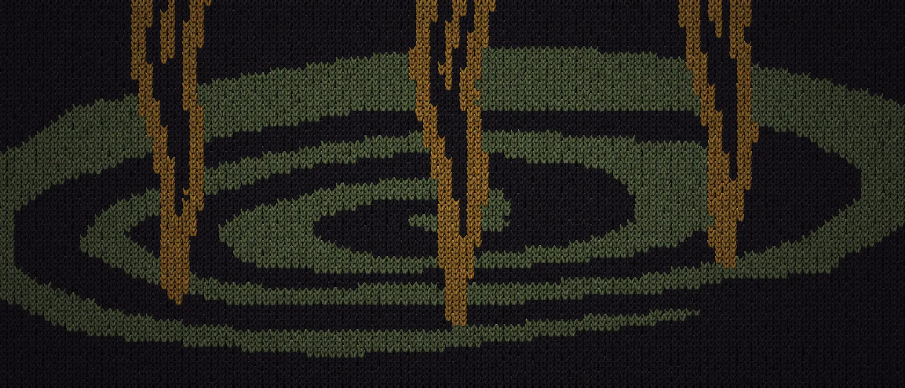
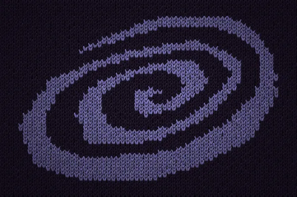

Линия «Мечи»
Три клинка уходят в водоворот. На джемпере рисунок связан жаккардом: он часть полотна, а не принт поверх. В линии семь вещей, от шоппера за 1 600 ₽ до флиски за 9 800 ₽.
Чёрная расцветка: охра и олива по чёрному.

Крутани волчок
Юла остановится на одной из 76 вещей магазина: имя, цена и ссылка.
22 главы
Каждая коллекция Волчка — глава со своим манифестом, с 2016 года по сегодня. Корешок ведёт к главе на volchok.ru.
- Нет царей нет боговколлекция, 2016
- Лесколлекция, 2016
- Смертельная битваколлекция, 2017
- Финальная фантазияколлекция, 2017
- Posthumanколлаборация, 2017
- Репликаколлекция, 2018
- Crash testколлекция, 2018
- Единствоколлаборация, 2019
- Хищные вещи векаколлекция, 2019
- Сектаколлекция, 2020
- Тиранколлекция, 2020
- Дроп 7дроп, 2021
- По ту сторону стеныколлекция, 2021
- Эпоха Возрожденияколлекция, 2021
- Волчок × Сила ветраколлаборация, 2022
- Волчок × Signalколлаборация, 2022
- Волчок × Sensorколлаборация, 2022
- No hopeколлекция, 2022
- Aralezколлекция, 2022
- Internal struggleколлаборация, 2022
- Purgatoryколлекция, 2023
- Logic Gamesколлекция, 2024
О бренде
- Где
- Петербург и Армения
- С какого года
- С 2014-го
- Как связаться
- order@volchok.ru

Волчок — петербургский бренд одежды с 2014 года: 22 главы-коллекции и футболки с именами вроде «Сатан банана».Бренд основал Василий Волчок-Русакович. Название значит сразу две вещи: волчонка из колыбельной и юлу, отсюда спираль в знаке. В 2018 году Волчок показывался на Pitti Uomo во Флоренции, в 2021-м одел геймеров павильона России на Венецианской архитектурной биеннале. С 2022 года часть команды работает в Армении, оттуда глава Aralez.